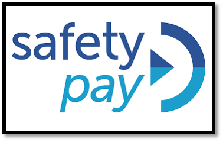

Los servicios ofrecidos a través de los medios electrónicos de comunicación a distancia son múltiples y muy variados y plantean nuevos retos que deben tener una respuesta ágil y adaptada a la realidad del mercado por parte de los medios de pago
“Los principales problemas que genera es la Desconfianza e inseguridad del usuario”.
Métodos de pago offline: contra reembolso, transferencia) suelen estar considerados por los compradores más seguros que los métodos online.Métodos de pago online: (pago con tarjeta de crédito/débito, PayPal, etc.) hacen que el nivel de seguridad sea más una percepción de usuario que una realidad.“Seguridad en las transacciones, facilidad de uso y los costes implicados en el medio de pago.”
Un sistema de pago seguro con tarjeta porque se consigue autenticar al titular de la tarjeta. PIN adicional de validación de la transacción Uso de autenticación vía SMS de código único para la validación Uso de físicas de coordenadas para la validación. En el proceso de implantación del sistema 3D Secure: Seguridad, facilidad de uso y universalidadx
Sistema “alternativo” de pago online más avanzado y más utilizado a nivel internacional. Fue adquirido por eBay en el año 2002 y aunque inicialmente era obligatorio disponer de una cuenta “PayPal” para poder efectuar pagos. Auténtico TPV virtual
Ventajas de PayPal Alcance internacional. La alta seguridad que ofrecen tanto al comprador como al vendedor mediante su avanzado sistema de gestión de fraude. Que permite reducir los niveles de pérdida de sus clientes hasta niveles muy bajos (por debajo del 0,3%).
SafetyPay, Allopass, Moneybookers.com, Pagantis, Paysafecard Servicios de pago: Amazon Payments, Google Wallet, Facebook Credits, Pay with Square o las propias empresas de telecomunicaciones. Próximamente pagos de servicios móviles directo ala cuenta de teléfono “carrier billing”.
Los sistemas de gestión de riesgo permiten mediante múltiples combinaciones de reglas de comparación en la que se cruzan determinados datos de la transacción (su dirección IP, datos de la tarjeta, datos del usuario, etc.) .
• Misma dirección IP o usuario usando diferentes tarjetas de crédito en un período de tiempo determinado.
No coincidencia entre datos de usuario y receptor del servicio (ejemplo aplicable en agencias de viaje)
• No coincidencia de la geo localización de la IP de la tarjeta con el IP del usuario o el país de registro
• Múltiples pedidos procedentes del mismo ordenador y en el mismo día.
• Pedidos por un importe superior al estándar
• No confirmación de la existencia de la dirección de entrega
• Pedidos a países no habituales.
Principales métricas de medios de pago y fraude online • Tasa de Fraude Online: pérdida para la compañía debido a operaciones fraudulentas. • Artículos no recibidos. • Artículos diferentes al comprado. • Artículos defectuosos. • Entrega del artículo demasiado tardía. • Errores de facturación (ejemplo, doble facturación del mismo periodo). • Devoluciones no justificadas por el comprador (vinculadas al derecho de desistimiento, es decir, el derecho del consumidor a devolver el producto comprado en un plazo de 7 días).
1 - Tasa de Denegación o Rechazo: Porcentaje del total de transacciones denegadas en el momento de validación de los datos de tarjeta de crédito. La denegación la produce:
2 - Tasa de Abandono: Porcentaje de transacciones abandonadas por el usuario en el momento de la compra por diferentes motivos, la mayoría de ellos asociadas al procedimiento de autenticación en sistemas 3D Secure.
3 - Tasa de Revisión Manual: En aquellas empresas que disponen de sistemas de gestión de riesgo, es el porcentaje de operaciones que se revisan manualmente tras su identificación como transacción sospechosa de fraude.
Las empresas que recopilan información de tarjetas de crédito para procesar pagos en Internet deben:• Crear y mantener una red segura para proteger la información de tarjetas de crédito.• Proteger la información de los titulares de tarjeta.• Mantener un programa de gestión de vulnerabilidades.• Implementar medidas potentes de control de acceso.• Supervisar y probar las redes de forma regular.• Mantener una política de seguridad de la información.
Beneficios: Seguridad Marca Imagen Estrategias de Mercado Monitorización y control del negocio Gestión de nuevos riesgos Clima de seguridad Control de proveedores Gestión de incidentes